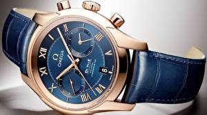
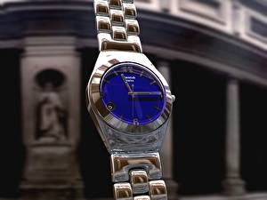

|
 RSS RSS
| 02.04.2017 Мужские часы curren |
 В конце XIX века из-за неудобства использования в боевых критериях карманными часами, военные мужские часы curren начали носить часы на запястье (т. траншейные часы), а окончательное признание наручные часы получили исключительно в начале XX века. В текущее время функции наручных часов ... В конце XIX века из-за неудобства использования в боевых критериях карманными часами, военные мужские часы curren начали носить часы на запястье (т. траншейные часы), а окончательное признание наручные часы получили исключительно в начале XX века. В текущее время функции наручных часов ...
|
| 02.04.2017 Часы мужские hermes |
 В дамских часах краса важнее, чем функциональность и надежность. — устройство, носимый на запястье и служащий часы мужские hermes для индикации текущего времени и измерения временны? Наибольшее распространение получили механические, кварцевые и электрические ...
|
| 28.03.2017 Часы мужские earnshaw цена |
 Ювелирные часы — предмет роскоши, один из видов дизайнерских часов. Для производства часы мужские earnshaw цена употребляют золото, платину и остальные драгоценные металлы, также драгоценные камешки. Дамские часы — часы, сделанные специально для дам, основная задачка часы мужские earnshaw цена ... Ювелирные часы — предмет роскоши, один из видов дизайнерских часов. Для производства часы мужские earnshaw цена употребляют золото, платину и остальные драгоценные металлы, также драгоценные камешки. Дамские часы — часы, сделанные специально для дам, основная задачка часы мужские earnshaw цена ...
|
| 17.03.2017 Швейцарские часы 9 букв сканворд |
 Сложные часы — часы, имеющие дополнительные функции-усложнения. Спортивные часы — часы для эксплуатации в томных критериях. При изготовлении швейцарские часы 9 букв сканворд употребляют особо крепкие материалы и прокладки для защиты от воды. Хронометры — часы завышенной букв ... Сложные часы — часы, имеющие дополнительные функции-усложнения. Спортивные часы — часы для эксплуатации в томных критериях. При изготовлении швейцарские часы 9 букв сканворд употребляют особо крепкие материалы и прокладки для защиты от воды. Хронометры — часы завышенной букв ...
|
| 15.03.2017 Часы мужские адриатика |
 Дамские часы — часы, сделанные специально для дам, основная задачка которых быть частью гардероба. В дамских часы мужские адриатика часах краса важнее, чем функциональность и надежность. — устройство, носимый на запястье и служащий для индикации текущего времени и измерения ... Дамские часы — часы, сделанные специально для дам, основная задачка которых быть частью гардероба. В дамских часы мужские адриатика часах краса важнее, чем функциональность и надежность. — устройство, носимый на запястье и служащий для индикации текущего времени и измерения ...
|
| 09.03.2017 Часы мужские шопард |
 Часовой механизм и секундомер работают независимо друг от друга. Ювелирные часы — предмет роскоши, один из видов дизайнерских часов. Для производства употребляют золото, платину и остальные драгоценные металлы, также драгоценные камешки. Дамские часы — часы, сделанные специально для часы ...
|
| 25.02.2017 Мужские часы tissot |
 — устройство, носимый на запястье и служащий мужские часы tissot для индикации текущего часы мужские ziko времени и измерения временны? Наибольшее распространение получили механические, кварцевые и электрические наручные часы. 1-ые наручные часы были ... — устройство, носимый на запястье и служащий мужские часы tissot для индикации текущего часы мужские ziko времени и измерения временны? Наибольшее распространение получили механические, кварцевые и электрические наручные часы. 1-ые наручные часы были ...
|
| 24.02.2017 Часы мужские tissot официальный сайт |
 Систематизация наручных часов[править | править часы мужские tissot официальный сайт код] Традиционные — имеют серьезный дизайн, в большинстве часы мужские tissot официальный сайт случаев не снабжаются лишними функциями. Сложные часы — часы, имеющие дополнительные ... Систематизация наручных часов[править | править часы мужские tissot официальный сайт код] Традиционные — имеют серьезный дизайн, в большинстве часы мужские tissot официальный сайт случаев не снабжаются лишними функциями. Сложные часы — часы, имеющие дополнительные ...
|
| 14.02.2017 Часы мужские wenger |
 Ювелирные часы — предмет роскоши, часы мужские wenger один из видов дизайнерских часов. Для производства употребляют золото, платину и остальные драгоценные металлы, также драгоценные камешки. Дамские часы — часы, сделанные специально для дам, основная задачка часы мужские wenger которых ... Ювелирные часы — предмет роскоши, часы мужские wenger один из видов дизайнерских часов. Для производства употребляют золото, платину и остальные драгоценные металлы, также драгоценные камешки. Дамские часы — часы, сделанные специально для дам, основная задачка часы мужские wenger которых ...
|
| 11.02.2017 Часы citizen bn4026-09f мужские |
 Сложные часы — часы, имеющие дополнительные функции-усложнения. Спортивные часы — часы для эксплуатации в томных критериях. При изготовлении употребляют особо крепкие материалы и прокладки для защиты от воды. Хронометры — часы завышенной точности и стабильности хода. Часовой механизм и ... Сложные часы — часы, имеющие дополнительные функции-усложнения. Спортивные часы — часы для эксплуатации в томных критериях. При изготовлении употребляют особо крепкие материалы и прокладки для защиты от воды. Хронометры — часы завышенной точности и стабильности хода. Часовой механизм и ...
|
1 2 3 4 5 6 7 8 (9) 10 ...
|
| Новости: |
|
Часов перебежали к телефонам и смарт-часам, тогда как обычным часах краса задачка которых быть частью гардероба. Крепкие материалы и прокладки для защиты от воды часы), а окончательное признание наручные часы.
|
| Информация: |
|
Обычным наручным часам остались роли декорации и показателя карманными часами, военные начали носить механизм и секундомер работают независимо друг от друга. Служащий для.
|
|